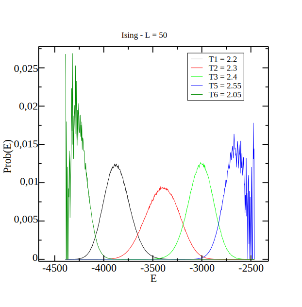

Ising Model States
Ising Model States
$Z =$
$$\sum_{n=0}^{M} h_{\beta_o}(n) x^{n}$$
$\beta_o=\beta_c$
Ising $L=24$
N° zeros $= 137$
$\beta_o=\beta_c$
Ising $L=24$
N° zeros $= 78$
Reduzimos o grau do polinômio sem afetar o zero dominante!
Comparação (Ising 2D)
Fisher$^*$: $g(E)$
EPD$^{*}$: $h_{\beta_o}(n)^{\dagger}$
| L | Fisher | EPD$^{**}$ |
|---|---|---|
| 24 | 576 | 136 |
| 32 | 1024 | 193 |
| 64 | 4096 | 433 |
| 150 | 22500 | 1037 |
* Precisa discretizar
**Descarte $h_t=10^{-4}$
$\dagger$ $\beta_o=\beta_c(L)$
Outras formas
$$= P(E)$$
$$ \equiv $$
$$m_n(E) = $$
| Momentos |
|---|
| $\langle E \rangle = ... $ |
| $\langle E^2 \rangle = ... $ |
| $\langle E^3 \rangle = ... $ |
| $\langle E^4 \rangle = ... $ |
| $\langle E^5 \rangle = ... $ |
MGF da energia
$$M_E(y) = \sum_{n=0}^{\infty} \frac{\langle E^n \rangle y^n}{n!}$$
Cumulantes
$$k_n = \frac{d^n \text{ln } M_E(y)}{dy^n}\Bigg|_{y=0} $$
Zeros da MGF
Partindo dos zeros EPD,
$$Z = \sum_E h_{\beta_o}(E)e^{-\Delta \beta E}, \text{ com } \Delta\beta=\beta - \beta_o $$
Não é necessário discretização.
Expandimos $e^{-\Delta \beta E}$ [1] e encontramos,
Número de zeros é $\infty \Rightarrow$
$$Z = Z_o\sum_k^{\infty} \frac{\langle E^k \rangle}{k!}(\underbrace{-\Delta \beta}_{y})^k = \underbrace{Z_o}_{cte}M_{E}(y) =0$$
A mesma informação de $Z = 0$ está contida em $M_E(y)=0$.
$y_c=\beta_c - \beta_o \implies y_c = 0$ para $\beta_o=\beta_c$.
[1] Rodrigues, et al: 10.1103/PhysRevE.104.064103
Truncando a série
Os zeros se expandem a partir do ponto $(0,0)$.
Comparação (Ising 2D)
Fisher$^*$: $g(E)$
EPD$^{*}$: $h_{\beta_o}(n)^{\dagger}$
MGF: $\langle E^n \rangle^{\dagger}$
| L | Fisher | EPD$^{**}$ | MGF |
|---|---|---|---|
| 24 | 576 | 136 | 35 |
| 32 | 1024 | 193 | 36 |
| 64 | 4096 | 433 | 40 |
| 150 | 22500 | 1037 | 49 |
* Precisa discretizar
** corte de $10^{-4}$
$\dagger$ $\beta_o=\beta_c(L)$
Algoritmo de Convergência
- Encontre os momentos $m_k(\beta_o^j)$ em $\beta_o^j$.
- Truncamos a série em um termo $k_{max}$.
- Encontre os zeros do polinômio com coeficientes $m_k(\beta_o^j) / k!$.
- Encontre o zero dominante $y^j_c(L)$.
- Se $y^j_c$ estiver próximo ao ponto $(0, 0)$, pare.
- Se não, faça $\beta^{j+1}_o(L) = \beta^j_o(L) - \Re e\{y^j_c(L)\}$ e volte a $(1.)$.
Alogritmo de Metropolis


- Se $r < e^{-\beta \Delta E}$, aceite.
- Se $r > e^{-\beta \Delta E}$, rejeite.
Cluster de Wolff


- Adicione ao grupo com probabilidade $P_{\text{ad}} = 1 - e^{-2\beta J}$.
Histograma Múltiplo
$P_{\beta_o}(E) = \frac{\sum_i H_i(E)}{\sum_j n_jZ_j^{-1} e^{\beta_o-\beta_j E}}$
MGF - EPD (Ising 2D)
Resultados equivalentes são obtidos usando os zeros da MGF ou os zeros EPD.
$T_c(L) = T_c + a L^{-1/\nu}$
MGF - EPD (Ising 2D)
Resultados equivalentes são obtidos usando os zeros da MGF ou os zeros EPD.
$\Im m \{x_c(L)\} = b L^{-1/\nu}$
$\Im m \{y_c(L)\} = c L^{-1/\nu}$
MGF - EPD (Ising 2D)
Resultados equivalentes são obtidos usando os zeros da MGF ou os zeros EPD.
| MGF | EPD ($10^{-1}$) | EPD ($10^{-100}$) | |
|---|---|---|---|
| $T_c$ | 2.2687(8) | 2.2692(9) | 2.2692(5) |
| $\nu$ | 1.02(2) | 1.02(2) | 1.07(1) |
Valores exatos: $\nu = 1$ e $T_c = 2.2691$.
MGF - EPD (Ising 2D)
Polinômio dos zeros da MGF tem um grau menor que cresce devagar com $L$.
MGF - EPD (Ising 2D)
Os zeros da MGF são mais rápidos ($100$x).
MGF - EPD (Potts $q=6$)
Os zeros da MGF são melhores pois não dependem da forma da distribuição de probabilidade para descartar estados
MGF - EPD (Potts $q=6$)
Os mesmos resultados equivalentes são obtidos usando os zeros da MGF ou os zeros EPD.
MGF e EPD: $T_c=0.80763(3)$.
Exato: $T_c = 0.80760$.
MGF - EPD (Potts $q=6$)
Polinômio dos zeros da MGF tem um grau menor que cresce devagar com $L$.
MGF - EPD (Potts $q=6$)
Os zeros da MGF são mais rápidos ($300 \approx 400$x).
MGF no Ising 3D
- Consideramos redes com $L=24,$ $32,$ $48,$ $64,$ $80,$ $96,$ $112,$ $128,$ $144,$ $160,$ $192,$ $256$.
- $500$ simulações em $\beta=0.221654$ para cada $L$.
- $1.5$x$10^5$ passos de termalização.
- $5$x$10^6$ passos de Monte Carlo.
- $520$GB de arquivos salvos.
MGF no Ising 3D
Os zeros EPD levariam para analisar todos as simulações: $591$ dias com $h_t=10^{-1}$ e $326$ dias com $h_t=10^{-100}$.
Os zeros da MGF levam só $4$ horas!
MGF no Ising 3D
Grandezas consideradas para o cálculo de $T_c$ e $\nu$:
- $\partial_{\beta}|m|$, $\chi$, $y_c$.
- $\partial_{\beta}\text{ln }|m|^n$ para $n=1,2,3,4$.
- $\partial_{\beta}U_n$ para $n=2,4,6$.
Consieramos $3$ termos de correção ao fazer as regressões:
$\mathcal{O} = A_1 L^{-1/\nu}$
$(1 + A_2L^{-\omega_1} + A_3L^{-\omega_2} + A_4L^{-\omega_{\nu}})$
$w_1=0.83, w_2=4, w_\nu=1.6$
MGF no Ising 3D
Encontrado: $\nu = 0.628(4)$.
Esperado: $\nu=0.629912(86)$.
MGF no Ising 3D
Encontrado: $T_c = 4.511535(7)$.
Esperado: $T_c=4.511524$.
Conclusão
- Os zeros da MGF são computacionalmente eficientes.
- Obtêm os mesmos resultados que os outros métodos.
- Podem obter diversas estimativas para expoentes críticos.
- Facilmente aplicável a sistemas grandes.
Agradecimentos